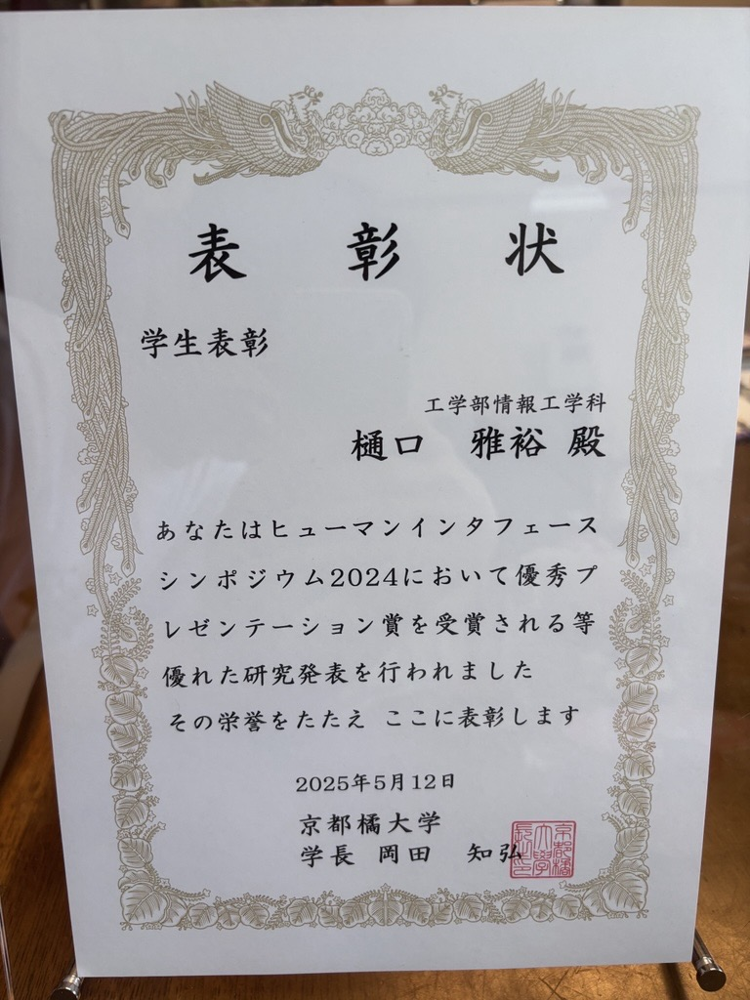

このたび、京都橘大学の2024年度学生表彰を受賞しました。 3月に受賞が決定し、5月12日(月)に学内で行われた表彰式にて、賞状と副賞をいただきました。 この学生表彰は、学業や課外活動、地域との連携、研究・創作など、さまざまな分野で活躍した学生に贈られるものです。 今回、自分の取り組みが評価されたことをとても嬉しく思っています。 今後も研究活動に励み、さらなる成果を上げていきたいと考えています。
- 2024年 京都橘大学 学生表彰の受賞者が決定https://www.tachibana-u.ac.jp/news/2025/03/2024-2142262375.html
- 2024年京都橘大学学生表彰式を執り行いましたhttps://www.tachibana-u.ac.jp/news/2025/05/2024-101.html